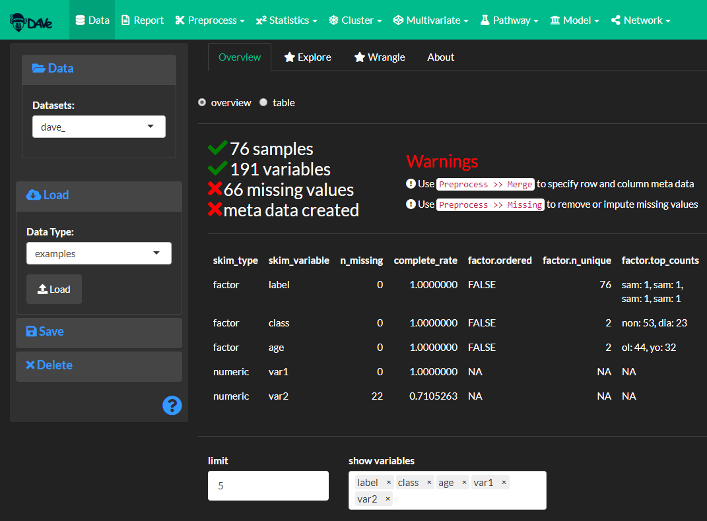
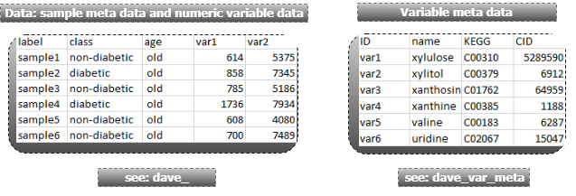
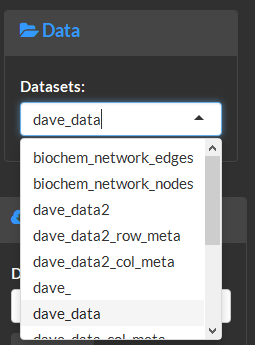
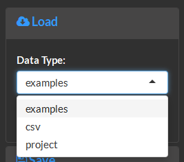
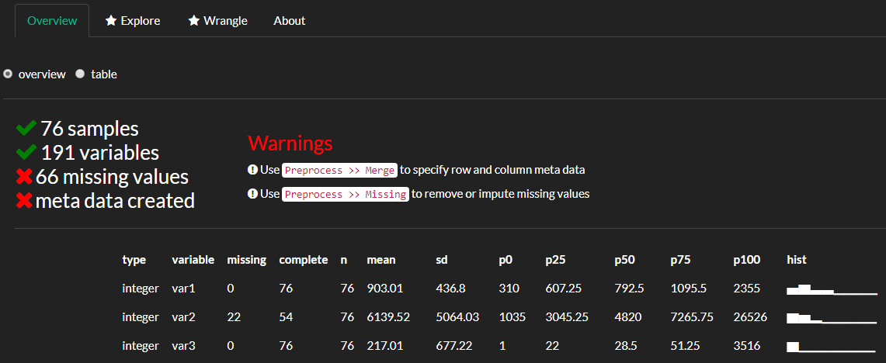
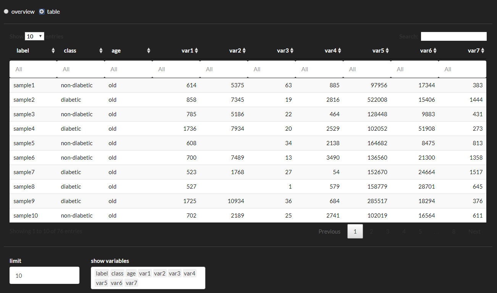
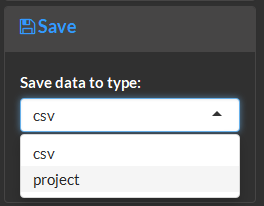
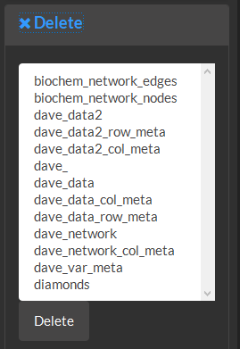

1 Data
The Data module can be used to:
upload data from files or load saved projects
overview and summarize data components
manage saved data
download

The Data module is used to load, overview and manage data sets used by all other modules. The following is an example of how to format data for analysis in DAVe. To load the tutorial data select the Data module >> then Load on the sidebar >> Data type: examples >> load.

Loading the example data will add the dave_ and dave_var_meta data sets which are examples of how to format the numeric data, sample (row) meta data and variable (column) meta data. Notice that dave_ contains both information about the samples (columns A to C) which describes each of the measurements. For example, the first row contains information about the sample label: sample1, its class: non-diabetic and age: old. The measured values for sample1 start in column D (e.g. var1, var2, etc). The measured variables can correspond to any numeric data to be used for the analysis while the sample meta data contained in the first three columns can be used to construct statistical and machine learning models and annotate visualizations.

Next use the Preprocess module to merge the two data set.
Reference
This module is used to overview and manage data and metadata objects. To get started format your data into two parts as shown below and then follow along with the instructions in Preprocess >> Merge to create an analysis ready data object.
Formatting
The data should be formatted into two parts 1) the main data containing sample descriptions and numeric variable data and 2) variable meta data decribing the measurements.

Select and view the data as a summary or table.

Data can be uploaded in the following formats: .csv, project or example.

Selected data summary.

Selected data table overview.

Data can be saved as a .csv for download or a project which can be loaded later.

Delete data objects.
